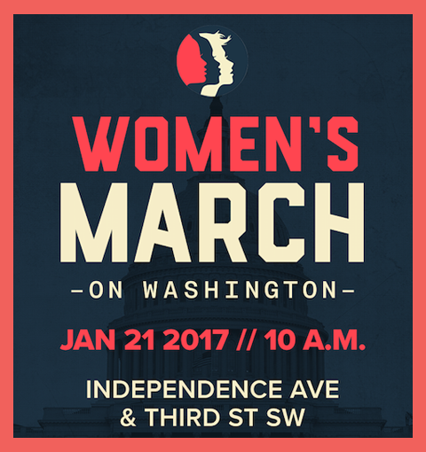

Women's March on Washington
We stand together in solidarity with our partners and children for the protection of our rights, our safety, our health, and our families - recognizing that our vibrant and diverse communities are the strength of our country.

- The Women’s March on Washington will convene on Saturday, 10:00 am, January 21, 2017.
- The starting point will be the intersection of Independence Avenue and Third Street SW, near the U.S. Capitol (see map below).